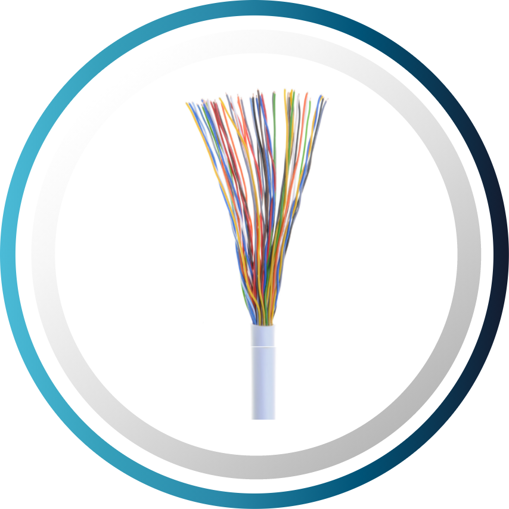
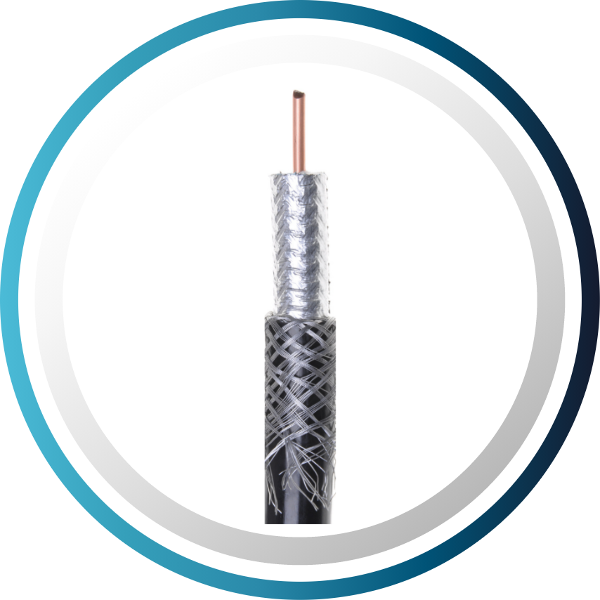
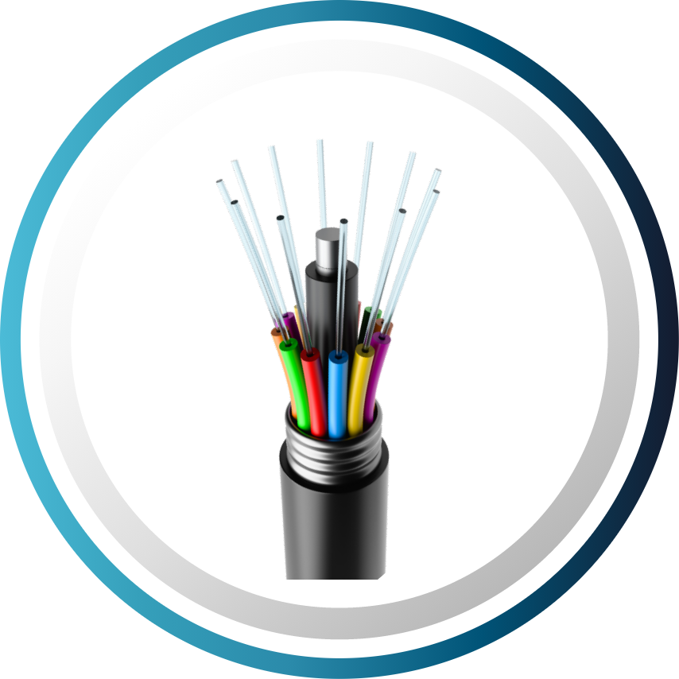

Evolución de las redes ópticas de transporte (PDH/SDH/Ethernet) y redes de acceso (xDSL, HFC, FTTH y wireless)
Presentación
Objetivo
Identificar la evolución tecnológica que han tenido las redes de transporte y las redes de acceso de telecomunicaciones, de acuerdo con su capacidad de llevar información a cierto rango de distancias.
Duración: 2 horas / 120 minutos
Para comenzar, ubiquémonos en el contexto de las redes de telecomunicaciones y su diferencia de acuerdo con el nivel de agregación de información de cada una.
Si observas la figura, en el primer nivel puedes encontrar las redes de larga distancia (redes core), en el segundo las redes backbone o redes troncales, y en el tercero las redes metropolitanas y regionales. Las redes de los dos últimos niveles son conocidas como redes de transporte.
En estos tres tipos de redes, las fibras ópticas son el medio de transmisión por excelencia.
En el último nivel de agregación, están las redes de acceso que, de forma amplia, se dividen en fijas y móviles según la posibilidad de ofrecer movilidad al cliente final; y a su vez, las de acceso fijo se clasifican en cableadas e inalámbricas.
Por último, dentro de las cableadas encontramos tres tipos según el medio de transmisión que las soporta: xDSL; HFC y FTTH/PON; siendo este último el objeto de nuestro aprendizaje.
Las redes de acceso tienen presencia de diferentes tipos de medios de transmisión, por ejemplo, cableados, inalámbricos o configuraciones híbridas.
Objetivo: Clasificar las redes de telecomunicaciones de acuerdo con su nivel de agregación.
¡Pongamos a prueba los conocimientos adquiridos!
¿Qué tal completar el esquema con las redes que acabamos de estudiar?
Enunciado: Arrastra cada opción al espacio correspondiente para dar la respuesta correcta.
Si tienes dudas, puedes repasar el contenido y realizar esta actividad las veces que necesites hasta completar el 100% de la calificación.
Ahora, ubiquémonos en las dos grandes categorías de redes de telecomunicaciones: Transporte y Acceso. A continuación, revisaremos cómo ha sido la evolución de cada una, comenzando con las redes de mayor nivel de agregación, las de transporte y luego estudiaremos la evolución de las redes de acceso. Dado que nuestro enfoque va orientado a las redes FTTH, solo echaremos un vistazo a las redes de transporte.
Pasa a la siguiente página para continuar.
Las redes de transporte fueron prontamente soportadas por las fibras ópticas, debido a sus características ideales para este tipo de redes, como baja atenuación y alta capacidad de transporte de información.
La evolución de las redes de transporte por fibra óptica se ha acelerado en la última década debido a la creciente demanda que existe de accesos a alta velocidad y gran ancho de banda, requeridos por nuevas aplicaciones y servicios para ofrecer una experiencia satisfactoria al usuario. Esto provoca cambios sustanciales en las arquitecturas de las redes ópticas, empezando con redes punto a punto en PDH (del inglés Plesiochronous Digital Hierarchy) a redes definidas por software en una quinta generación.
En la siguiente figura, puedes observar gráficamente como ha sido esta evolución:
Podemos sintetizar la comparación de las cinco generaciones así:
| Generación | Tecnologías | Características | Tasas de transmisión |
|---|---|---|---|
| Primera |
PDH (Jerarquía Digital Plesiócrona)
FC (Canal de FIbra) Optical Ethernet |
Enlaces p-t-p (punto a punto)
Multiplexación bit a bit |
1 - 140 Mbps |
| Segunda |
SDH (Jerarquía Digital Sincrónica)
SONET (Red Óptica Sincronizada) |
Topología en anillo
APS (Conmutación de protección automática) Multiplexación byte a byte Enlaces p-t-p (punto a punto) |
50 Mbps - 2.5 Gbps |
| Tercera | SDH, SONET sobre WDM (Multiplexación por división de longitud de onda) |
Topologías en anillo y malla
APS (Conmutación de protección automática) Malla de longitud de onda fija Multiplexación byte a byte Enlaces p-t-p (punto a punto) |
50 Mbps - 40 Gbps |
| Cuarta |
OTN (Red de transporte óptico)
DWDM (Multiplexado denso por división de longitud de onda) ROADM (Multiplexor reconfigurable Add/Drop ) 100G Ethernet |
Topologías en anillo y malla
Malla de longitud de onda fija Configuración ODU (Unidad de datos ópticos) |
1 - 100 Gbps |
| Quinta |
HOS (Conmutación óptica híbrida)
EON (Redes ópticas elásticas) NFV (Virtualización de funciones de Red) SDN Multicapa (Redes definidas por software) Conexión de retorno en 5G Nube con infraestructura óptica |
Topologías en malla
Modulación adaptativa Malla flexible Adaptabilidad Eficiencia Modo de transferencia de flujo |
10 Gbps - 1 Tbps |
Podemos ampliar la descripción de algunas redes de transporte enmarcadas en las 5 generaciones, hasta llegar a la más reciente que es la red OTN (por sus siglas en inglés Optical Transport Network y en español como Red de Transporte Óptica). Vale la pena notar las tasas de cada una de estas tecnologías y el enfoque en sus características. Consulta el siguiente enlace para conocer esta información:
Documento: Características de algunas redes de transporte
Extensión: 4 páginas
Objetivo: Reconocer las características importantes de las redes de transporte.
¿Han quedado claros los temas estudiados sobre redes de transporte? Si sientes que aún no, es momento de hacer una pausa, repasar e incluso investigar un poco más. ¡Luego podrás ponerte a prueba con esta actividad!
Enunciado: Selecciona en cada espacio en blanco la respuesta correcta para completar las afirmaciones.
Recuerda que puedes repasar el contenido y realizar esta actividad las veces que necesites hasta completar el 100% de la calificación.
Las redes de generación permiten configuración en anillo, pero con una única portadora circulando a través del anillo.
Las redes de generación permiten configurar el ancho de banda entre canales.
Las redes de generación no son interoperables.
Hasta este punto, hemos revisado un tipo de redes que transportan una muy alta capacidad. Pasemos ahora a revisar la evolución de aquellas redes que conectan al cliente final con las redes de transporte, las ya mencionadas redes de acceso.
Pasa a la siguiente página para continuar.
En nuestro estudio de la evolución de las redes de acceso de telecomunicaciones, conviene aclarar que nos enfocaremos en aquellas que soportan capacidades de banda ancha (entendiendo banda ancha como la capacidad que tienen las redes de transmitir información) y que son de acceso fijo, es decir, cuando los dispositivos del cliente no poseen la flexibilidad de movilidad, quedando conectados físicamente a la red.
Sin embargo, siendo esta una característica importante, vamos a revisar unas tecnologías de acceso complementarias a estas redes fijas de tipo inalámbrico que permiten añadir cierta movilidad a los equipos del cliente.
3.1. Redes de acceso Fijas
3.1.1. Tecnología xDSL
Estas tecnologías surgen como respuesta de las tradicionales operadoras de telefonía para incursionar en el mercado de banda ancha. El objetivo principal es hacer uso del mismo par de cobre para prestar tanto el servicio de telefonía como los servicios de internet.
En la figura, puedes observar la tasa alcanzable de las generaciones de xDSL.
El módem V.x antecesor de los xDSL, no fue diseñado para soportar simultáneamente servicios telefónicos y de datos, eran los inicios de la transmisión de datos a principios de los 90.
Este problema fue resuelto por la red digital de servicios integrados RDSI o ISDN por sus siglas en inglés. En 1994, se estandariza la tecnología línea de abonado digital de alta velocidad (HDSL), para transmisiones con velocidades de hasta 1.544 Mbps en T1 con dos pares de cobre con cobertura del orden de 3658 m (12000 pies) y transmisión simétrica.
DSL asimétrico (ADSL) se diseñó para distribuir en un ancho de banda de 1.1 MHz, los servicios de telefonía y la transmisión de datos, tanto en el downstream como en el upstream, proporcionando una velocidad de hasta 8 Mbit / s para el flujo descendente.
Por otro lado, ADSL2 mejoró la velocidad pico de flujo descendente a 12 Mbps extendiendo el ancho de banda de 1.1 MHz a 2.2 MHz DSL de muy alta velocidad (VDSL). Amplió, aún más, el ancho de banda, hasta 17 MHz y 30 MHz para la edición más reciente denominada como VDSL2. Cabe resaltar que estos incrementos en las tasas tienen un costo en la disminución de la cobertura. Igualmente con el incremento de las frecuencias, se presenta la diafonía entre pares. Surgen entonces las técnicas de vectorización (vectoring) para mitigar este inconveniente, posibilitando tasas hasta 100 Mbps.
Fibra al punto de distribución FTTdp (Fiber to the distribution point) y G.fast son las nuevas perspectivas de evolución. Tienen la posibilidad de proporcionar 1 Gbps sobre un ancho de banda de 106 MHz y una distancia de 100 metros, usando la fibra para la interconexión con la oficina central. Según el Broadband Forum, organismo que impulsa el uso de tecnologías de última milla en pares de cobre, se espera que FTTdp tenga rendimientos similares a las actuales redes de fibra que llegan directamente a los hogares, pero haciendo uso del par de cobre en el interior de los predios.
La siguiente figura nos muestra una comparación de las velocidades y alcances de distintas tecnologías xDSL.
3.1.2. Tecnología HFC
Podemos decir que la evolución de las redes de acceso basadas en cables coaxiales ha tenido dos frentes: en los años 80´s, la introducción de los láseres y la fibra óptica, y en los 90´s, la capa de datos.
Las redes de CATV (Community Antenna Television) prestaban únicamente el servicio de televisión de forma unidireccional, sobre cables coaxiales y una serie de amplificadores de RF en una arquitectura árbol-rama, la cual introducía muchas distorsiones y presentaba una muy baja confiabilidad al depender de elementos activos en la red. Los láseres aportaron la linealidad suficiente para no distorsionar las señales analógicas cuando se hace la conversión electro-óptica de las señales de televisión.
Por otro lado, las fibras aportaron un medio de muy bajas pérdidas que posibilitaron eliminar varios amplificadores y con ello mejorar las características de desempeño de las redes.
En los años 90´s con la aparición del internet, se genera la necesidad de un segundo frente de evolución: la implementación de la transmisión de datos en forma bidireccional. Este frente ha sido desarrollado por CableLabs, el organismo estandarizador de esta capa en las redes HFC, y sus estándares DOCSIS.
En la siguiente figura, puedes observar esta evolución. El estándar en fuerza es el DOCSIS 3.1 Dúplex completo, estandarizado en octubre de 2013, posibilita velocidades máximas de 10 Gbps de ancho de banda compartido entre suscriptores en un área de servicio.
| DOCSIS 1.0 | DOCSIS 1.1 | DOCSIS 2.0 | DOCSIS 3.0 | DOCSIS 3.1 | DOCSIS 4.0 | |
|---|---|---|---|---|---|---|
| Características Destacadas | Tecnología inicial de banda ancha por cable | Servicio de voz sobre IP | Mayor velocidad de subida | Mayor velocidad de bajada | Capacidad muy mejorada | Avance en capacidad y eficiencia |
| Capacidad de Bajada | 40 Mbps | 40 Mbps | 40 Mbps | 1 Gbps | 10 Gbps | 10 Gbps |
| Capacidad de Subida | 10 Mbps | 10 Mbps | 30 Mbps | 200 Mbps | 1-2 Gbps | 6 Gbps |
| Fecha de Producción | 1996 | 1999 | 2001 | 2006 | 2013 | 2019 |
3.1.3. Tecnología FTTH
El constante crecimiento de la demanda de ancho de banda, ha mostrado la necesidad de que la fibra pase de las redes de larga distancia y metropolitanas a las redes de acceso. Esto ha ocurrido tanto en las redes de pares de cobre como en redes xDSL y en redes coaxiales, en lo que se conoce como redes HFC. Sin embargo, la evolución hacia redes completamente ópticas en el acceso en lo que se conoce como redes FTTH sobre redes ópticas pasivas-PON, han cobrado una importancia notable, siendo actualmente la técnica sobre la cual los ISP están haciendo su expansión.
Así mismo, lo que se denomina como Redes Neutras, en las que se propone una única infraestructura de telecomunicaciones y varios proveedores de servicios, también se soporta sobre la fibra óptica. Esta evolución se refleja, como en las demás redes de acceso, en el incremento de capacidad tanto en sentido descendente como ascendente.
En la siguiente figura, puedes observar esta evolución. Es importante notar que existen dos organismos estandarizadores: la ITU-T (Telecommunication Standardization Sector) y la IEEE (Institute of Electrical and Electronics Engineers, Inc.), siendo este último el organismo impulsor de Ethernet sobre este tipo de redes, y por ello sus estándares comienzan con “E”. Actualmente, en Latinoamérica el estándar en fuerza es el GPON que ofrece 2.5 Gbps en sentido descendente y 1.25 Gbps en sentido ascendente. En otros países, el estándar imperante es el XG-PON que proporciona 10 Gbps en el sentido descendente y 2.5 Gbps en el sentido ascendente. Recientemente, se ha comenzado a implementar el XGS-PON, que logra velocidades simétricas de 10 Gbps.
La coexistencia entre diferentes generaciones se logra con la implementación de diferentes longitudes de onda. Cabe destacar que, las redes de Nueva Generación NG (NG New Generation), como NG- PON2 y NG-EPON, habilitan el uso de la multiplexación por división de onda WDM, de allí que se simboliza con una barra de colores, indicando el uso de varias longitudes de onda.
Un resumen de esta evolución de las redes fijas de acceso de banda ancha lo puedes observar en la siguiente figura:
Objetivo: Reconocer las características importantes de algunas redes de acceso fijo.
¡Pongamos a prueba los conocimientos adquiridos!
Hablemos de las tres redes de acceso fijo de banda ancha que están operando actualmente: xDSL, HFC-DOCSIS y FTTH-PON.
Enunciado: Arrastra cada opción al espacio correspondiente para responder por cuáles medios de transmisión son soportados estos sistemas de banda ancha.
Recuerda que puedes repasar el contenido y realizar esta actividad las veces que necesites hasta completar el 100% de la calificación.
PAR TELEFÓNICO |
CABLE COAXIAL |
FTTH |
|  |  |  |
Si bien las redes cableadas tienen su línea de progresión muy clara, hoy en día todos los modem en casa del usuario, de cualquiera de las redes de acceso de banda ancha fija, ofrecen la posibilidad de incluir el acceso inalámbrico como complemento para la conexión de los equipos del cliente. Vamos a revisar brevemente la evolución de estas tecnologías.
3.2. Redes de acceso fijas inalámbricas
Son aquellos accesos que no requieren una conexión por cable hasta el terminal del usuario, dado que la comunicación se produce de forma inalámbrica a través de ondas electromagnéticas, pero que requieren que el usuario esté a una distancia del punto de acceso no superior al alcance del mismo.
Este tipo de accesos normalmente suplen o complementan a los accesos cableados, sustituyendo el último tramo de cable que conecta el terminal de usuario a la red, por un enlace inalámbrico, como sucede en las redes WIFI domésticas.
Estos accesos aunque dan cierta movilidad al usuario, no es total, ya que está limitada a una zona concreta que depende de la cobertura del punto inalámbrico de acceso. Cabe destacar que, a pesar de las velocidades permitidas por cada tecnología de acceso inalámbrico, la velocidad real de acceso a Internet dependerá de la velocidad que se tenga contratada con el proveedor de servicio de acceso.
Entre las tecnologías de este tipo se encuentran:
3.2.1. Wi-Fi
La tecnología WIFI permite la comunicación entre dispositivos de forma inalámbrica a través de ondas electromagnéticas. Debido a su facilidad de instalación y funcionamiento, se ha convertido en una de las tecnologías inalámbricas más populares, y es ampliamente utilizada en redes domésticas, sustituyendo la conexión por cable desde el terminal de usuario hasta el router o módem que da acceso a Internet.
3.2.2. WiGig
La Wireless Gigabit Alliance (WiGig) era una organización comercial que desarrolló y promovió la adopción de la tecnología de comunicaciones inalámbricas de alta velocidad multi-gigabit que opera en la banda de frecuencias sin licencia de 60 GHz. La alianza fue absorbida por la WIFI Alliance en marzo de 2013.
El estándar que resultó para esta banda es el IEEE 802.11ad en mayo de 2009. La versión completa 1.0 de la especificación WiGig se anunció en diciembre de 2009. Los dispositivos habilitados para WiGig tribanda, que operan en las bandas de 2.4, 5 y 60 GHz, ofrecen tasas de transferencia de datos de hasta 7 Gbps.
3.2.3. Li-Fi
La comunicación de luz visible (VLC Visible light communication) es un método inalámbrico que utiliza la luz emitida por LED para ofrecer una comunicación en red de alta velocidad similar a WIFI, lo que lleva al término LIFI. Se puede utilizar como solución independiente o en una función complementaria a la comunicación por red de radiofrecuencia RF o celular.
La base de la tecnología, concebida por el profesor Harald Haas de la Universidad de Edimburgo, implica encender y apagar los LED en nanosegundos a una frecuencia muy alta. Haas demostró la tecnología en una charla TED Global en 2011 y luego cofundó PureLIFI, un OEM de tecnología LIFI para fabricantes de LED.
Como el espectro de luz visible es 10000 veces mayor que el espectro de radiofrecuencia, VLC se considera una solución a las limitaciones de ancho de banda de RF. La industria ha generado velocidades de transmisión de datos muy altas, lo que la hace competitiva.
Aunque la señal no puede atravesar obstrucciones como paredes, no se requiere una línea de visión directa siempre que la luz se refleje desde otras superficies. La iluminación LED debe estar ENCENDIDA para que la señal se transmita, pero puede atenuarse a niveles muy bajos de potencia.
VLC tiene una ventaja sobre WIFI y es que la transmisión no causa interferencia electromagnética. Su ruta de evolución la puedes detallar a continuación:
Las aplicaciones son amplias, pero una aplicación ha atraído el interés clave de las principales empresas fabricantes de iluminación: Acuity Brands, GE y Philips, es decir, gran venta al por menor.
Objetivo: Reconocer las características importantes de la tecnología WIFI.
¿Lograste comprender qué caracteriza el WIFI? Si sientes que aún no, puedes repasar o investigar un poco más antes de realizar esta actividad.
Enunciado: Selecciona cuál de las siguientes afirmaciones caracterizan la tecnología WIFI.
Recuerda que puedes repasar el contenido y realizar esta actividad las veces que necesites hasta completar el 100% de la calificación.
| Es una tecnología que puede interoperar con casi todas las tecnologías de acceso. | |
| Es una tecnología de grandes tasas de bits a una relativa baja distancia. | |
| Es una tecnología que siendo inalámbrica, es considerada de acceso móvil. | |
| Es una tecnología sensible a las condiciones del entorno. |
Como vemos hay una serie de tecnologías fijas e inalámbricas complementarias entre sí. Esta tendencia sigue y se afianza con el 5G.
3.3. Una visión de futuro: redes de fibra y tecnología móvil 5G
En las redes móviles, 5G es la quinta generación, la cual es especificada por la organización 3GPP, ya que ofrece mejores capacidades de transmisión en una red inalámbrica móvil que antes solo se podía creer posible en redes de área local que utilizaban tecnología fija.
Entre las grandes ventajas del 5G, se encuentra una menor latencia y una mayor capacidad y rendimiento que su antecesor red 4G. Esto permite desarrollar nuevas aplicaciones como videos 3D de alta definición, entornos de realidad virtual en tiempo real, vehículos autónomos, cirugía remota y conectividad a miles de millones de dispositivos para admitir el Internet de las cosas IoT (IoT Internet of Things).
5G también promete una mayor confiabilidad, una eficiencia energética mejorada y una reconfiguración más fácil de la red para implementar servicios adicionales. En la siguiente figura, puedes observar una comparación del desempeño de estas redes y su evolución.
Expertos de la industria y la academia, afirman que una de las alternativas más promisorias para conectar las antenas con las oficinas centrales del operador, es directamente con fibra óptica, y desde las antenas hacer la radiación en 5G. Esto por el ancho que requiere 5G para ofrecer tasas mayores a 1 Gbps, y por los requerimientos de emisión a bajas potencias, necesitando así una mayor densidad de antenas que las tecnologías previas. En este caso la infraestructura sería una FTTA, fibra a la antena.
Como hemos podido revisar a lo largo de este tema, antes de poder hablar sobre las redes de acceso, tenemos que mencionar las redes de transporte, que son aquellas que hacen posible un gran alcance geográfico y disponer de gran capacidad de transmisión de la información, permitiendo la comunicación de la información incluso entre continentes. Estas redes se caracterizan por ofrecer alta disponibilidad, grandes capacidades en Gbps, facilidad de gestión y bajo tiempo de respuesta. Estas altas exigencias explican el porqué la fibra óptica es el principal medio de transmisión en las redes de transporte. Luego de ver todas las generaciones y evolución en las redes de transporte, pasamos a las redes de acceso de banda ancha que son fundamentales para la conexión al usuario final. A diferencia de las redes de transporte, en las redes de acceso tenemos diferentes medios de transmisión cableados e inalámbricos. En la evolución de las redes de acceso de banda ancha cableadas, pasamos por las redes soportadas en pares de cobre, las redes híbridas fibra y coaxial y las actuales redes de fibra al hogar. Su evolución nos muestra los cambios sucedidos en un tiempo relativamente corto, las diferentes topologías de red que usamos, las diferentes tecnologías y sus avances, el crecimiento en las tasas de transmisión, todo ello ha permitido la comunicación de las personas en el mundo y ha abierto un sin número de transformaciones en la sociedad.
- Aleksic, S. (2015). Towards Fifth-Generation (5G) Optical Transport Networks. Recuperado el 20 de noviembre de 2021 de https://ieeexplore.ieee.org/[...]
- Broadband Forum. (2019). TR-301 Architecture and Requirements for Fiber to the Distribution Point. Recuperado el 20 de noviembre de 2021 de https://www.broadband-forum.org/[...]
- EXFO. (20 de noviembre de 2021). ONT (6.709) Reference Guide. Recuperado de https://exfopreprodstorage.blob.core.windows.net/[...]
- Gibbons, A. (2021). De 1G a 5G: una breve evolución de la telefonía y las redes inalámbricas. Recuperado el 20 de noviembre de 2021 de https://www.allaboutcircuits.com/[...]
- Ghadialy, Z. (2018). LiFi can be a valuable tool for densification. Recuperado el 20 de noviembre de 2021 de https://blog.3g4g.co.uk/2018/[...]
- Hogan, H. (s.f). Big Data impulsa cambios en las redes ópticas. Recuperado el 20 de noviembre de 2021 de https://www.photonics.com/EDU/[...]
- ITU-T PON standars - progress and recent activities. (20 de noviembre de 2021). Recuperado de https://www.itu.int/en/[...]
- Lighting Controls Association. (2021). NEMA Awarded International Trade Administration Grant to Boost U.S. Exports. Recuperado el 20 de noviembre de 2021 de http://lightingcontrolsassociation.org/
- Ministerio de Asuntos Económicos y Transformación Digital. (20 de noviembre de 2021). Acceso móvil. Recuperado de https://avancedigital.mineco.gob.es/[...]
- Ministerio de Asuntos Económicos y Transformación Digital. (20 de noviembre de 2021). Acceso inalámbrico. Recuperado de https://avancedigital.mineco.gob.es/[...]
- Ministerio de Asuntos Económicos y Transformación Digital. (20 de noviembre de 2021). Acceso cableado. Recuperado de https://avancedigital.mineco.gob.es/[...]
- OFCOM (20 de noviembre de 2021). UK fixed-line broadband performance, May 2011. Recuperado de https://www.ofcom.org.uk/[...]
- Ohno, O. (2020). Desafío 5G: Conectividad Post Covid-19, diseño y densidad de las redes de fibra óptica. Recuperado el 20 de noviembre de 2021 de https://www.furukawalatam.com/es/[...]
- Pinho, P. (2017). Plastic Optical Fibers in Access Networks. Recuperado el 20 de noviembre de 2021 de https://www.researchgate.net/[...]
- Wikipedia. (20 de noviembre de 2021). Jerarquía digital plesiócrona. Recuperado de https://es.wikipedia.org/[...]
- Wikipedia. (20 de noviembre de 2021). Wireless Gigabit Alliance. Recuperado de https://es.wikipedia.org/[...]
- RF Wireless World. (20 de noviembre de 2021). Difference between WIFI 6 and WIFI 5,WIFI 4,WIFI 3,WIFI 2,WIFI 1. Recuperado de: https://www.rfwireless-world.com/[...]
Créditos
| Experta Temática | Ana María Cárdenas |
| Pares evaluadores | Luis Fernando Rodríguez / Marco Teran / Fredy Pereira |
| Asesoría pedagógica / Diseño instruccional | Carolina Llanos |
| Corrección de estilos | Danleibi Molina |
| Diseño gráfico | Inesly Vega |
| Producción audiovisual | Maria Álvarez / Sebastián Quintero |
| Integración de contenidos | Santiago Bernal |
| Revisión de calidad | Fyco Learning |
Gestión técnica y administrativa
Versión 1.0
Este recurso educativo es propiedad de Fyco Learning.
Todo el material didáctico que lo compone está protegido por las leyes que rigen la propiedad intelectual.
Para utilizar todo o parte de este material se debe contar con autorización expresa de la organización.
Derechos reservados ©